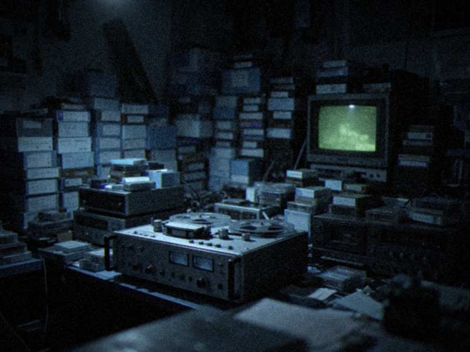

回岸音檔修復工作室
Hui-an Audio Restoration / Service
首頁
｜
關於站長
｜
服務項目
｜
作品清單
｜
留言板
｜
工作筆記
｜
友情連結
價目表
項目
價格
卡帶轉檔
NT$ 300 ／卷
底噪處理
NT$ 500 ／小時
人聲還原
NT$ 800 ／小時
※ 限委託人本人到場
母帶修復
另議
第七卷 不收費
委託流程
線上填寫委託單
攜帶原件至工作室
現場試聽，確認範圍
修復（約 3–7 個工作天）
取件
※ 受潮、發霉、磁粉脫落的帶子，請勿自行通電。
工作室

2005/02/17 拍攝。左邊是開盤機，右邊是卡座。架子上的帶子不是我的。
線上委託單
姓名
聯絡方式
帶子數量
卷
問題描述
預約專線：02-2xxx-0913 轉
7
Copyright 2004 回岸音檔修復工作室 最後更新 2005/03/11 03:12
原始檔
※ 本網站為虛構創作，人物、地點與事件均屬虛構。